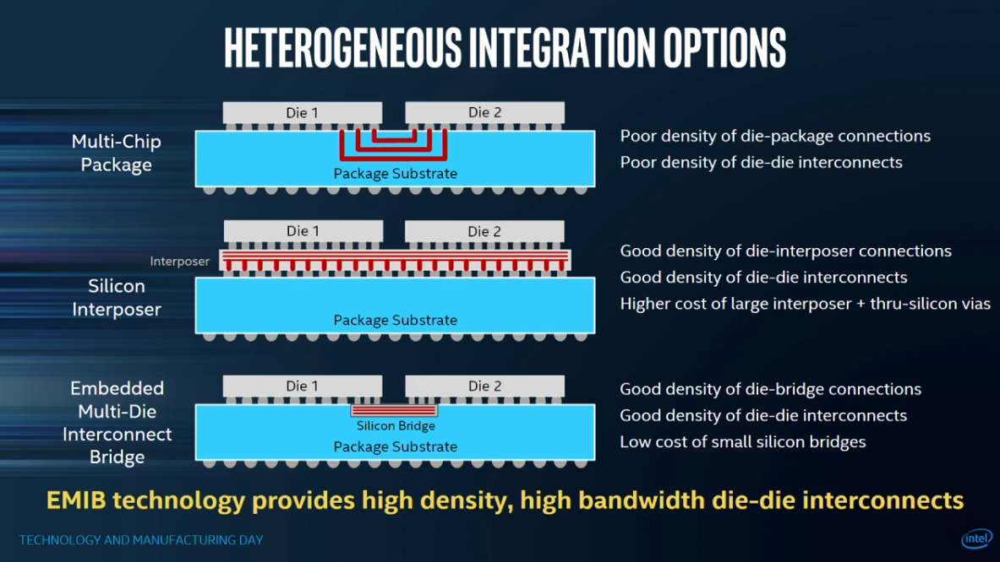
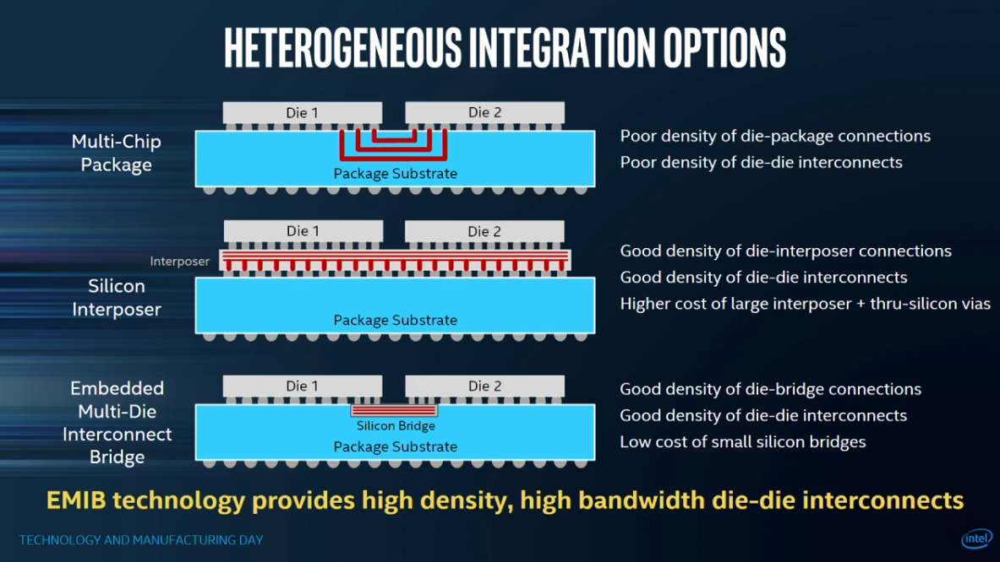
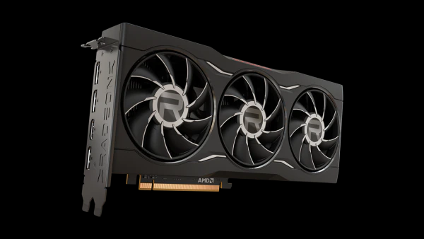
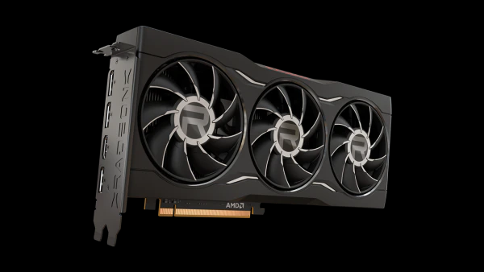

Semiconductors: Exploring the World of Electronics
Purpose
We aim to provide a comprehensive exploration of the fascinating world of semiconductors and their pivotal role in shaping modern technology. Our purpose is to educate and engage visitors by offering valuable insights into the diverse aspects of semiconductors, from their fundamental principles to cutting-edge advancements.
Through informative articles, detailed explanations, and captivating visuals, we strive to foster a deeper understanding of semiconductors, their applications, and the impact they have on our daily lives. Whether you are a student, technology enthusiast, or industry professional, our website serves as a valuable resource for unraveling the complexities of semiconductors and staying updated with the latest trends in this ever-evolving field. Join us on this exciting journey as we delve into the fascinating realm of semiconductors and unlock the possibilities of tomorrow's technology
Audience
Semiconductor Students
Branding
Website Logo
Style Guide
Color Palette
Palette URL: https://coolors.co/2196f3-333333-ffffff-f8f8f8| Primary | Secondary | Accent 1 | Accent 2 |
|---|---|---|---|
| #2196f3 | #333333 | #ffffff | #f8f8f8 |
Typography
Heading Font: Montserrat
Paragraph Font: Open Sans
Normal paragraph example
As we broaden the use of our technologies, across packaging, software, internal and external, we're confident that we can deliver a leadership product family in the marketplace across all of our major product categories,” he said. “I was also very pleased to see some of the long-term innovations coming out of [Intel's Technology Development team] as we work to close any gaps with external foundries as well as leap ahead. And clearly, we're not interested in just closing gaps. We're interested in resuming that position of the unquestioned leader in process technology, and that's our commitment.
Colored paragraph example
Intel has gone through cycles before. We've had periods where we were ahead and periods where we were behind. Others, personally I was very involved in, periods where we were very diminished in the marketplace and late to the multi-core [CPU].
Navigation
Site Map
Content
Chiplets (Home)
Chiplets are smaller, independent units that perform specific functions within electronic devices. Unlike traditional chips that integrate all components into one, chiplets modularize the design and manufacturing process. They allow for customization, faster development cycles, and improved performance and efficiency. Chiplets can make our computers more powerful, energy-efficient, and flexibile, contributing to better user experiences and cost optimizationPossible topics
AMD's chiplets or Intel's tiles or MCM
Pros: Scalability, Flexibilily, Reusibility, Modularity, Yields per wafer, lower cost
Cons: Fixed costs, Development Costs, Design Complexity, Interconnect Challenges
Images for Chiplets


Advanced Packaging
Advanced packaging refers to innovative techniques and approaches used in the packaging of semiconductor chips. It involves the integration of multiple components, such as processors, memory, sensors, and other functionalities, into a compact and efficient package.
Possible topics
AMD CPUs, GPUs, APUs/Intel's CPUs, Datacenter GPUs, types of interconnects
Pros: Miniaturization, Performance Improvement, Higher Integration Density, Cost Optimization
Cons: Increased Development Costs, Design Complexity, Interconnect Challenges, Testing and Reliability
Images for Advanced Packaging
 

Types of Products or interconnects
Semiconductor products encompass a wide range of electronic components that are based on semiconductor materials and technologies.
Possible Topics
Microprocessors: CPUs, GPUs, ASICs, AI Engines, FPGAs
Memory: DDR, SRAM, GDDR, HBM, Cache
Images for Types of Products
 

Wireframes
Create three wireframes for your site. One for each page and list them here